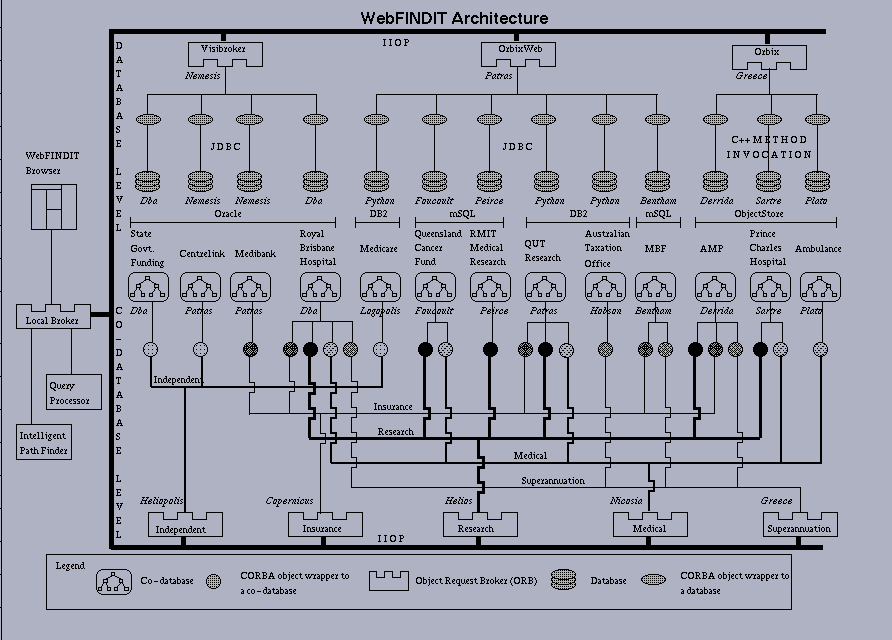

Healthcare Application Scenario
A. Bouguettaya, B. Benatallah, L. Hendra, J. Beard, K. Smith, M. Ouzzani
Queensland University of Technology - GPO Box 2434 Brisbane, QLD 4001 Australia
WebFINDIT Objectives
WebFINDIT is a system for describing, locating and accessing data in Internet-accessible databases. The goal of this project is to build a WWW-centric infrastructure to elicit interoperation of Web and Internet accessible databases. This infrastructure would logically present users with one single database whose components will span every database site that is connected to the WWW. We call this Web-based logical database the World Wide Database (WWD).
WebFINDIT Approach
WebFINDIT aims to achieve scalability through the incremental formation and discovery of inter-relationships between Web accessible databases. Clusterings (groupings) of databases are established through the sharing of high level meta-information, and individual databases join and leave these clusters at their own discretion. Users are incrementally and dynamically educated about the available information space without being presented with all available information. We take advantage of this architecture by using the information meta-type as a unit of data sharing. Databases, therefore, need only to show and map the information types that need to be shared.
Querying Web databases using WebFINDIT is provided at two levels: metadata level (explore the available information, display meta information about a particular database, etc.) and data level (query actual information stored in databases).
WebFINDIT Implementation
WebFINDIT is implemented using the latest in middleware technologies, namely CORBA and Java. CORBA and Java have been proven to provide complementary services for distributed applications. In WebFINDIT, CORBA is used to provide a robust communication infrastructure while Java is used to allow a dynamic deployment of the system over the Web.
The actual WebFINDIT prototype uses three IIOP compliant CORBA ORBs, namely Orbix, OrbixWeb, and VisiBroker for Java. These ORBs interconnect 26 databases (some contain actual information while others contain the meta-information about the information space). These databases are implemented using four different DBMSs: Oracle, mSQL, DB2, and ObjectStore.
A Healthcare scenario has been developed to illustrate
the use of WebFINDIT. Healthcare applications provide a relevant context
where tools such as WebFINDIT can be used.

Healthcare Application Scenario